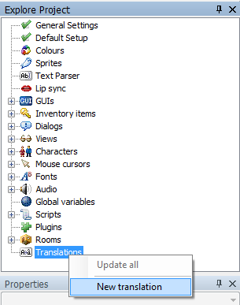

Translations
Overview
You can translate your game to multiple languages. In AGS the game translation works like a table of strings, where for each of the original text strings in your game you provide a translated replacement. This includes speech text in dialogs, any text in double-quotes in regular scripts, and also certain property values (GUI texts, character names, hotspot descriptions and similar). When you play a game with a translation enabled, AGS will automatically replace the displayed text on GUIs, character speech and text messages. For other cases there's a script function GetTranslation that lets you retrieve the translation for the wanted string which you may then use as necessary.
Let's move on to how translations are created in the editor.

When you have your game project opened right-click the "Translations" node in the tree, and choose "New translation". Once you've named it, AGS will ask if you want to populate the file now. Say yes.
A new file will be created in the game folder, called NAME.TRS, where NAME is the name you gave to the translation in the editor. This file is simply a text file by format and a .trs suffix, and will be generated with each original line of text separated by a blank line. That blank line is where you enter the translated text.
You can now work on translating these texts yourself or give this file to your translators. The idea is to fill in each blank line with the corresponding translation of the original line above it. If this empty line is left blank, it will simply not be translated and display the original line in the game.
IMPORTANT: make sure that the TRS file is saved in a correct encoding. If you want to have Unicode texts in your game then save it as UTF-8 (specifically: UTF-8 without BOM). Otherwise save it as ASCII. You would also have to add a Encoding hint to the translation options, see the "Additional options" section about this.
IMPORTANT: there are few ways to break your translation file and make it unusable for AGS. The following points are essential to keep in mind:
- DO NOT remove or replace original text lines, they are necessary to find matches.
- DO NOT remove blank lines between original texts, just keep these empty lines if you are not going to translate the text. AGS treats each odd line as an original text and each even line as translated.
- DO NOT add any extra lines in the middle, for the same reason. There are exceptions to this rule - see below.
Once the translation is done, right-click the translation and choose "Compile". It will be converted into a compiled translation (.TRA) file in the Compiled folder, which can be used with the game engine.
Run the game Setup program, and select the translation from the drop-down box. Then, run the game, and all the text should be translated.
While most in-game text is translated automatically, there are a few instances when this is not possible. These are when a script uses functions like Append to build up a string, or CompareTo to check some user input. In these cases, you can use the GetTranslation function to make it work.
Formatted strings may also end up in translation file, these are ones that contain input placeholders such as '%s', '%d' and so on. It's essential that the translated line has all the same placeholders and has them in the same order. Otherwise this line may cause errors in game.
Please note, there is also an "Update" option when right-clicking a translation. This is useful if you've got a translated version of your game, but you want to update the game and add a few bits in. Once you've updated your game, run the Update Translation option and the translation file you select will get any new bits of text added to it at the bottom -- then you can just ask your translator to additionally translate these lines.
Additional options
There are two more things you can add to the translation file: comments and font options.
Comment lines should begin with //, just like in script, and anything else on the same line will be ignored, and such lines won't be counted when deciding which line is original text and which is the translation. Comments are allowed to be placed anywhere in the file, and they are a good way to keep notes for yourself or your translators.
Font options let you define certain font substitutes for this particular translation. All options begin with the comment opening and a pound sign: //# - followed by OPTION=VALUE kind of string where "OPTION" is the corresponding name. Following options are supported:
- NormalFont - sets the font used for displaying messages on screen. This corresponds to the
Game.NormalFontscript property. The value may be either the font's number orDEFAULTfor no change. - SpeechFont - sets the font used for character speech. This corresponds to the
Game.SpeechFontscript property. The value may be either the font's number orDEFAULTfor no change. - TextDirection - sets the direction in which the text is written. This corresponds to calling the
SetGameOptionscript function with the OPT_RIGHTTOLEFT argument. The value may beLEFT(for left-to-right),RIGHT(for right-to-left) orDEFAULT. - Encoding - sets the encoding hint that matches the encoding of the file. If you use UTF-8, the file must be saved with UTF-8 without BOM encoding. Your game can be set to a different encoding, just make sure that the font used supports the encoding used.
Example:
// The normal font to use - DEFAULT or font number
//#NormalFont=4
// The speech font to use - DEFAULT or font number
//#SpeechFont=DEFAULT
// Text direction - DEFAULT, LEFT or RIGHT
//#TextDirection=RIGHT
// Text encoding hint - ASCII or UTF-8
//#Encoding=UTF-8This would set NormalFont to font 4, leave SpeechFont unchanged, and switch text direction to Right-to-left mode.
NOTE: these options are applied to game properties the moment new translation is enabled. But they are not kept permanently while that translation is active. Changing any of these in script would override values set by current translation.
Troubleshooting
If you have ?s displaying instead of special characters in the translated lines, make sure the font you use is imported into AGS correctly and supports the characters you want to display. In case some letters are mixed up this might be a mapping problem of the source font, you need to manually edit this fontsheet or just find a new font on the world wide web that works.
When you play the game with the translation enabled and special characters of the language are replaced with ?? (2 question marks specifically), this means the actual encoding of the .trs files uses 2 bytes for each character, probably because you saved the file as UTF-8 and either set the encoding to ASCII or not set at all. If you wish to use ASCII, make sure you save and encode the .trs file to ANSI and NOT in unicode or UTF-8 encoding.
In some wordprocessors changing the encoding of the whole file to ANSI encoding changes the normal special characters to something even more unrecognisable, so you might have to run a search and replace function over the whole document for every special character that is used in that language (make sure to check for capitalized special characters too) after changing the encoding to ANSI. A lot of wordprocessors use Ctrl+H as hotkey for the search and replace function.
Advanced Help
There is a great Editor Plugin called Speech Center that makes handling translations easier. You can find a download link for the file in the linked AGS Forum thread.
See also: Game.ChangeTranslation, Game.TranslationFilename, GetTranslation, IsTranslationAvailable